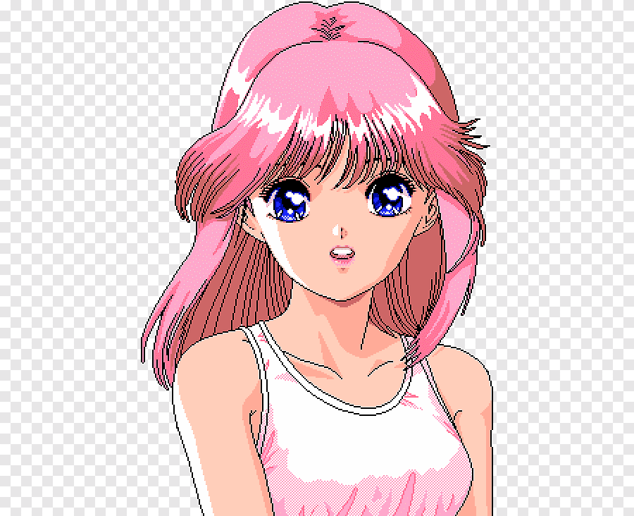
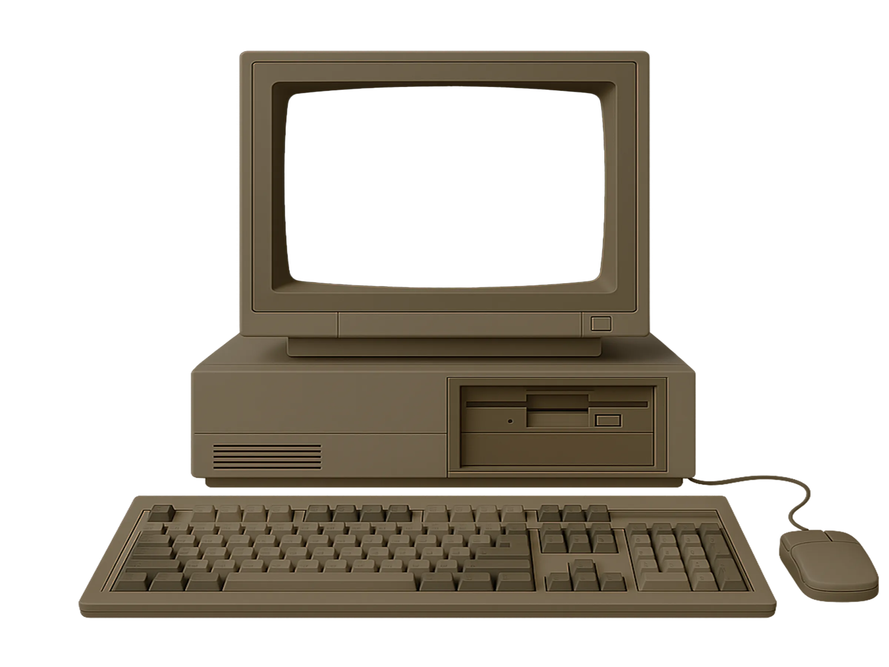

To begin, click your user name

Guest
Loading Personal Settings...
Turn off computer
After you log on, you can add or change accounts.
Just go to Control Panel and click User Accounts.
start
System
Artifacts
Hardware
VEKTROID
フローラルの専門店
FLORAL SHOPPE // MACINTOSH PLUS
▼ スクロールして初期化 ▼
NO SIGNAL 信号なし
untitled - Paint ペイント
_
□
✕
F
ile ファイル
E
dit 編集
V
iew 表示
I
mage 画像
C
olors 色
H
elp ヘルプ
背景色 BG
ステッカー STICKERS
GENERATE ART
アート生成
CREATE
カセット生成
Ready 準備完了
0, 0

HARDWARE_ハードウェア
ドラッグして回転 // ボタンをクリックして操作
テープを挿入
NO TAPE テープなし